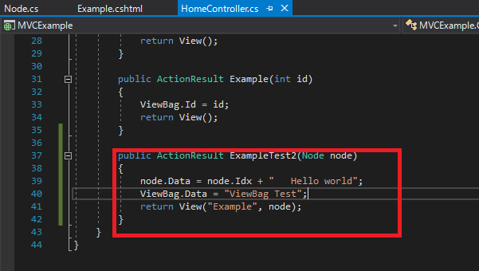
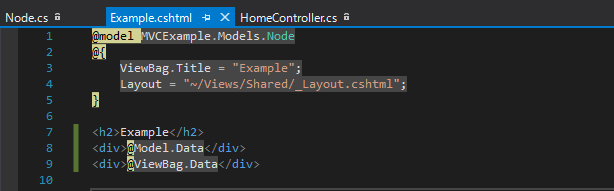
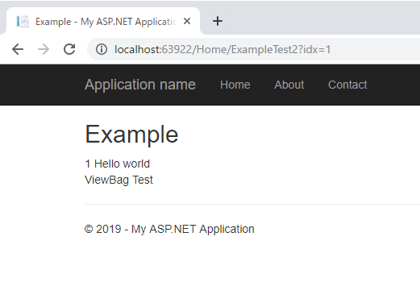
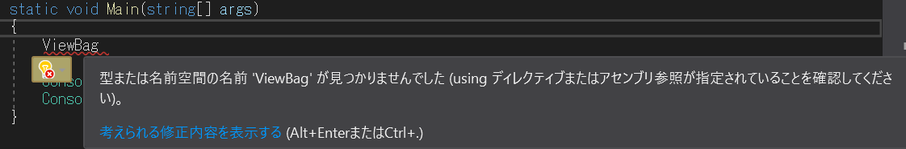

[C#] dynamicタイプの動的パラメータ-DynamicObject(WinFormでASP.MVCのViewBagオブジェクトを使用する方法)
こんにちは。明月です。
この投稿はC#でdynamicタイプの動的パラメータ-DynamicObject(WinFormでASP.MVCのViewBagオブジェクトを使用する方法)に関する説明です。
ASP.MVCのControllerでView(.cshtml)にデータを渡す時、ViewBagというオブジェクトを使う場合があります。
ViewBagというオブジェクトはすごく便利です。可読性やパフォーマンスはよくないですが、クラスを一々宣言する必要なしでそのままに動的なプロパティを生成してデータを格納、取得するの可能です。
でも、ViewBagとはASP.MVCだけで使うものなので、それを同じ仕様で実装してC#のWindowフォーム開発する時にも使ってみましょう。

コントロールでViewBagオブジェクトに任意のプロパティにデータを格納しましょう。

ViewファイルはViewBagの任意のプロパティからデータを取得しましょう。

link - 参照リンクを作成中
コンソールのプロジェクトを生成してViewBagを使ってみましょう。

ViewBagオブジェクトがありませんというメッセージが表示されいます。
using System;
using System.Collections.Generic;
// dynamicネームクラスが必要
using System.Dynamic;
namespace DynamicTest
{
// DynamicObjectを継承する。
public class DynamicDictionary : DynamicObject
{
// 外部では動的プロパティだが、内部にはDictionaryで構成する。
private Dictionary<string, object> dictionary = new Dictionary<string, object>();
// 動的プロパティを取得するメソッド。 binderの値は動的なプロパティ名。
public override bool TryGetMember(GetMemberBinder binder, out object result)
{
// 大文字、小文字を区分なしにする。例えば、ViewBag.ABCとViewBag.abcは同じデータ
string name = binder.Name.ToLower();
// Dictionaryにキーで検索してデータを渡す。
// trueなら正常に動作する。
return dictionary.TryGetValue(name, out result);
}
// 動的なプロパティを作成するメソッド。binderの値は動的なプロパティ名。
public override bool TrySetMember(SetMemberBinder binder, object value)
{
// 大文字、小文字を区分なしにする。例えば、ViewBag.ABCとViewBag.abcは同じデータ
// Dictionaryにキーでデータを格納する。
dictionary[binder.Name.ToLower()] = value;
// trueなら正常に動作する。
return true;
}
}
// ASP.NETみたいに抽象クラスを生成してViewBagプロパティを作成した。ViewBagプロパティに動的に値を設定できる。
abstract class Controller
{
// 内部でDynamicDictionaryの変数を生成してViewBag名のプロパティを使える。
private DynamicDictionary dynamicDic = new DynamicDictionary();
// ViewBagのプロパティ、データタイプはdynamic。
public dynamic ViewBag
{
get
{
return dynamicDic;
}
}
}
// Controllerクラスを継承する。
class Program : Controller
{
// コンストラクタ
public Program()
{
// ViewBagにTestというプロパティに「Hello world」というデータを格納する。以前にTestプロパティを宣言したことがない。
ViewBag.Test = "Hello world";
// ViewBag.Testというプロパティからデータがコンソールに出力する。
Console.WriteLine(ViewBag.Test);
}
// 実行関数
static void Main(string[] args)
{
// クラスを割り当てする。
new Program();
Console.WriteLine("Press any key...");
Console.ReadKey();
}
}
}
私がC#でWindowを作成する時、値を渡すために一つ一つエンティティクラスを生成して開発したことがあります。
そのため、一回性の値のクラスがだんだん多くなったし、プロジェクトがすごく大きくなったし、その結果、プロジェクトの管理性、可読性、パフォーマンスなどがすべて悪くなった経験があります。
それで、Window Form開発する時にもASP.MVCのViewBagを使ったらすごく便利かと思いました。探してみたらありました。
link - https://docs.microsoft.com/en-us/dotnet/api/system.dynamic.dynamicobject?view=netframework-4.8
前からこのことを知ってたらよかったのにという物足りなさがあります。
ここまでC#でdynamicタイプの動的パラメータ-DynamicObject(WinFormでASP.MVCのViewBagオブジェクトを使用する方法)に関する説明でした。
ご不明なところや間違いところがあればコメントしてください。
- [C#] PDFを作成する方法(iTextSharp)2020/05/03 10:22:40
- [C#] シリアライズ(Serialization)をする方法2020/04/30 19:32:04
- [C#] dynamicタイプの動的パラメータ-DynamicObject(WinFormでASP.MVCのViewBagオブジェクトを使用する方法)2020/04/29 22:41:32
- [C#] Stringの補間式(interpolation)2020/04/27 20:39:57
- [C#] Newtonsoft.JSONライブラリを利用してJsonデータ構造を扱う方法2020/04/23 20:19:53
- [C#] EMailを送信する方法(System.Net.Mail)2020/04/22 19:00:42
- [C#] ini環境ファイルを使う方法2020/04/22 00:09:39
- [C#] 環境設定ファイルを扱う方法(System.Configuration)2020/04/20 19:37:57
- [C#] Reflectionを利用してクラス複製する方法2020/04/17 00:34:33
- [C#] XMLをXPathを利用してデータを取得する方法2020/04/16 00:47:17
- [C#] NSoupライブラリを利用してXMLとHTMLをパーシングする方法2020/04/14 19:34:15
- [C#] 日付フォーマット2020/04/09 20:53:20
- [C#] ログライブラリ(log4net)を設定する方法2020/04/08 13:04:22
- [C#] Zipの圧縮ファイルを解凍するコードを作成する方法2020/04/07 11:17:44
- [C#] Zip圧縮コードを作成する方法2020/04/06 14:56:13
- [C#] PDFを作成する方法(iTextSharp)2020/05/03 10:22:40
- [C#] シリアライズ(Serialization)をする方法2020/04/30 19:32:04
- [C#] dynamicタイプの動的パラメータ-DynamicObject(WinFormでASP.MVCのViewBagオブジェクトを使用する方法)2020/04/29 22:41:32
- [C#] Stringの補間式(interpolation)2020/04/27 20:39:57
- [C#] Newtonsoft.JSONライブラリを利用してJsonデータ構造を扱う方法2020/04/23 20:19:53
- [C#] EMailを送信する方法(System.Net.Mail)2020/04/22 19:00:42
- [C#] ini環境ファイルを使う方法2020/04/22 00:09:39
- [C#] 環境設定ファイルを扱う方法(System.Configuration)2020/04/20 19:37:57
- [C#] Reflectionを利用してクラス複製する方法2020/04/17 00:34:33
- [C#] XMLをXPathを利用してデータを取得する方法2020/04/16 00:47:17
- [C#] NSoupライブラリを利用してXMLとHTMLをパーシングする方法2020/04/14 19:34:15
- [C#] 日付フォーマット2020/04/09 20:53:20
- [C#] ログライブラリ(log4net)を設定する方法2020/04/08 13:04:22
- [C#] Zipの圧縮ファイルを解凍するコードを作成する方法2020/04/07 11:17:44
- [C#] Zip圧縮コードを作成する方法2020/04/06 14:56:13